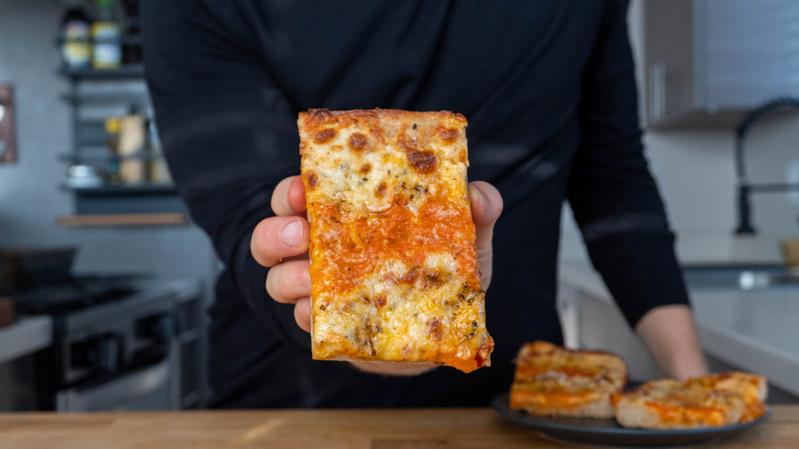

There are a lot of kinds of pizza nowadays, but this recipe is from Ethan Chlebowski and it is the Detroit Pizza. It's thick, crispy, and cheesy just like NY pizza is.
Places where I get my pizzas:
Ingredients
for 2 Servings
Dough
- 200 g bread flour
- 50 g whole wheat flour
- 5 g salt
- 4 g instant yeast
- 175 g water
- 15 g olive oil (for the pizza pan)
Sauce
- 800 g (28 oz) fresh or canned tomatoes
- 15 g Butter
- 15 g Olive oil
- 3 garlic cloves
- 1/4 onion
- Salt to taste
- Basil (at the end)
Toppings
- 175 g Mozzarella cheese
- Calabrian Chiles, minced
- Sprinkle of oregano
Preparation
- Add the dough ingredients to a bowl except for the olive oil, and mix until a sticky dough forms. Set a bowl over top and let rest for 15 minutes.
- Add the sauce ingredients to a saucepot and place on low heat with a lid over top. Simmer for 20 to 30 minutes - Use this time to do dishes
- Back at the dough, stretch and knead for about 5 minutes until it passes the windowpane test - tear off a piece and stretch it until very thin and translucent without tearing. Set the bowl over the top and let rise for 30 minutes. Stir the sauce and remove the lid, let simmer for another 30 minutes. - Use this time to do dishes
- Turn off the sauce and blend with an immersion blender. Add the chopped basil and adjust the seasoning to taste. Store in the fridge until ready to use.
- Get out a Detroit-style pizza pan or quarter baking sheet and add the olive oil. Toss the dough in and stretch to the edges until it starts to spring back. Let rest for 20 minutes. Preheat the oven to 450 F (232 C)
- Top the pizza by laying the chiles and oregano down first and follow with the shredded mozzarella. Spoon over the sauce in 3 strips. Bake for about 20 minutes until the crust is golden brown and crispy and the cheese is bubbly.
- Slide the cooked pizza onto a cooling rack for 5 minutes before slicing and enjoying.
Back to Top
Return to Homepage